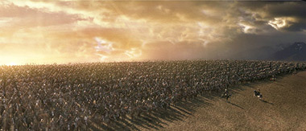
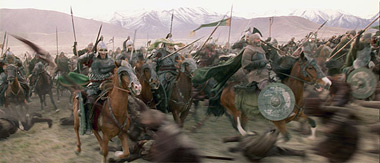

Klaar voor ROTK
maandag 15 december 2003 | Zomaar
Vanaf woensdag is het opnieuw aanschuiven geblazen in zowat alle cinemazalen ter wereld. We krijgen eindelijk het derde en laatste deel van de verfilming van de Lord of the Rings trilogie te zien!
Welgeteld één jaar voor de verfilming van The Fellowship raakte ik toevallig verslingerd aan de boeken van Tolkien. Sprookjes, legendes en duistere Middeleeuwse vertellingen hadden me altijd al erg weten te boeien, waardoor ik me natuurlijk als een vis in het water voelde tussen de creaturen van Middle Earth. Ik had de 1500 bladzijden van de trilogie uit in amper twee weken (tijdens mijn stage btw ;-). Maar het beste moest nog komen: het boek The Silmarillion, dat vertelt over de grote veldslagen en tragedies uit de eerste en de tweede era van Midden Aarde. De Silmarillion schept een absurd perspectief in het oeuvre van Tolkien, zodat de gebeurtenissen uit The Lord of The Rings slechts een klein detail lijken na een veel dieper en gewichtiger verleden.
De films kwamen net op tijd, want ik kon meteen na mijn leestrip als volleerd Tolkien-kenner meedeinen op de golven van een gigantische LOTR-hype die toen ontstond (vooral op het net). Ik werd lid van het Tolkiengenootschap en leverde mijn geapprecieerde bijdragen op de fora van Thefellowship.nl, een van de grootste Nederlandse fansites. Ondertussen is mijn Midden Aarde-drift wel wat bekoeld, al verraden enkele verweesde LOTR-related RSS-feeds in mijn nieuwslezer me nog.
Helaas waren de eerste twee delen van de verfilming een bittere teleurstelling voor me, hoezeer ik ze ook had willen aanvaarden. Te oppervlakkig, te snel, te veel geknipt, te veel (onnodig!) afgeweken, te mellow en vooral te plastiekerig. Ik kreeg The Fellowship nog een beetje verwerkt, maar The Two Towers was er echt over. Natuurlijk heb ik de extended DVD’s bekeken, en natuurlijk heb ik diepe bewondering voor de honderden mensen die de ziel uit hun lijf hebben gewerkt om Midden Aarde tot in de fijnste details tot leven te wekken (het gaat echt ver — misschien te ver), maar ze hadden beter wat meer tijd en geld gestoken in het script, wat natuurlijk veel belangrijker is dan alle eyecandy.
Nu, bon, ik geef Peter Jackson nog één kans. The Return of the King zou meteen de beste film van de drie zijn, schrijven verschillende recensenten. Ik hoop dat ze niet uit hun nek lullen. In ieder geval zal ik, net zoals bij de vorige twee, moeten wachten op de extended DVD, om een volledig zicht te krijgen op de visie van de regisseur. Goed dat die DVD’s er zijn trouwens: stukken beter dan de cinemaversies.
Ik ga nu zondagochtend om 10.00 (jawel: ochtend) met Julie kijken in de Kinepolis in Gent. Kom maar af als je zin hebt, al bestel je best een ticket op voorhand.
Zie ook: mijn review van The Fellowship of the Ring en The Two Towers.


Mich op 16 december 2003
Tja Fre, ik bekijk de films los van de boeken. Het is per slot van rekening nog altijd ‘maar’ film – een totaal ander medium dan een boek.
En sorry hoor: als je het boek zou volgen, zou dat nogal eens saaie cinema opleveren. Bioscoop is luie ontspanning – zeker wat betreft de Hollywood kaskrakers. Maar voor ‘slechts’ amusement te zijn, vind ik het verdorie toch beestig goed en impressionant.
De twee eerste boeken heb ik enkele jaren geleden gelezen, maar ik herlees ze binnenkort nog eens – en neem er het derde deel dan natuurlijk ook meteen bij ;-) Mijn zusje heeft ze in het Engels, maar daar zie ik toch wat tegenop, eerlijk gezegd.